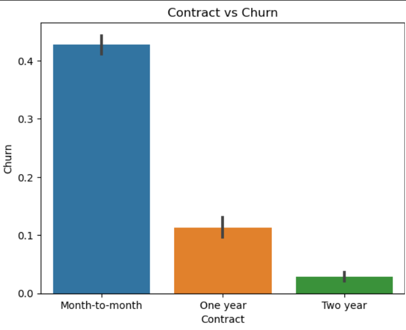
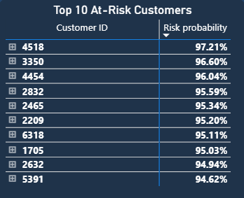
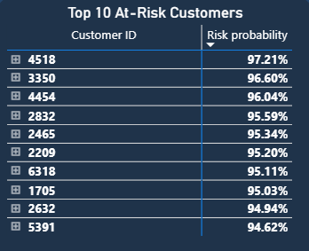

E-Commerce Sales Analytics — SQL Project
Using SQL & Explainable AI to Identify High-Risk Customers and Boost Retention

Concept / Problem
When people think of e-commerce, they think of shopping carts and checkout buttons. I see data. Every click, every payment, every product added to a basket is a story waiting to be told — if you can structure and query it the right way.
For this project, I built a mini data warehouse in PostgreSQL to simulate e-commerce sales. My goal: demonstrate advanced SQL skills that go far beyond SELECT * FROM.
Why E-Commerce?
E-commerce is the perfect playground for analytics. It touches on everything:
- Customers → repeat buyers, churn, loyalty.
- Products → best sellers, inventory analysis, revenue share.
- Payments & Stores → multi-channel performance.
- Time → seasonal trends, growth, and forecasting.
If you can query this, you can query almost anything.
What I Built
7,043 telecom customers with features like gender, seniority, service usage, contract type, payment method, and monthly charges.
The data set includes information about:
Customers who left within the last month- Designed a star schema with one fact table (fact_sales) at the center and five dimension tables (dim_customer, dim_item, dim_store, dim_payment, dim_time).
- Wrote SQL scripts for schema creation, indexes, materialized views, and data validation.
- Developed analytical queries that show revenue trends, top sellers, repeat customer behavior, and store performance.
- Automated reports with stored procedures.
- Documented everything in a runbook-style README and visualized the design with an ERD diagram.

Key Insights & Visuals
- Designed a star schema with one fact table (fact_sales) at the center and five dimension tables (dim_customer, dim_item, dim_store, dim_payment, dim_time).
- Wrote SQL scripts for schema creation, indexes, materialized views, and data validation.
- Developed analytical queries that show revenue trends, top sellers, repeat customer behavior, and store performance.
- Automated reports with stored procedures. 
- Documented everything in a runbook-style README and visualized the design with an ERD diagram.


 



Model Training
- Models: I tested multiple models—Logistic Regression, Random Forest, XGBoost—to predict high-risk customers. After tuning and evaluating with accuracy, precision, recall, and ROC-AUC, XGBoost emerged as the winner with balanced performance. Using SHAP values, I could explain why each customer was flagged, turning predictions into actionable business insights.
Code & Dashboard
- Notebook snippet: EDA
- Notebook snippet: Feature Engineering
- Notebook snippet: Model Training
- Power BI dashboard: Key Influencers, customer segmentation, churn probabilities
- SHAP feature importance visuals
Impact / Results
Model Performance
- Accuracy: 80%
- Precision: 65%
- Recall: 52%
- ROC-AUC: 0.84
Business Impact
- Identified 684 high-risk customers
- Expected saved revenue: R75,537
- Key churn drivers: Fiber-optic internet, month-to-month contracts, electronic check payments
Operational Insights
- Prioritize month-to-month contract holders for retention campaigns
- Flag high monthly charge customers for proactive outreach
- Enable personalized marketing campaigns via segmentation
Next Steps
- Integrate churn prediction into CRM for automated alerts
- Run A/B tests for retention campaigns based on risk segments
- Monitor model performance monthly
Visual highlights from the Power BI dashboard and SHAP plots provide clear, actionable insights for management.